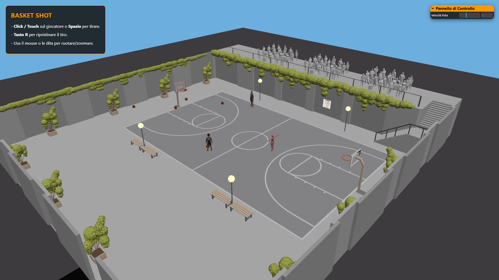
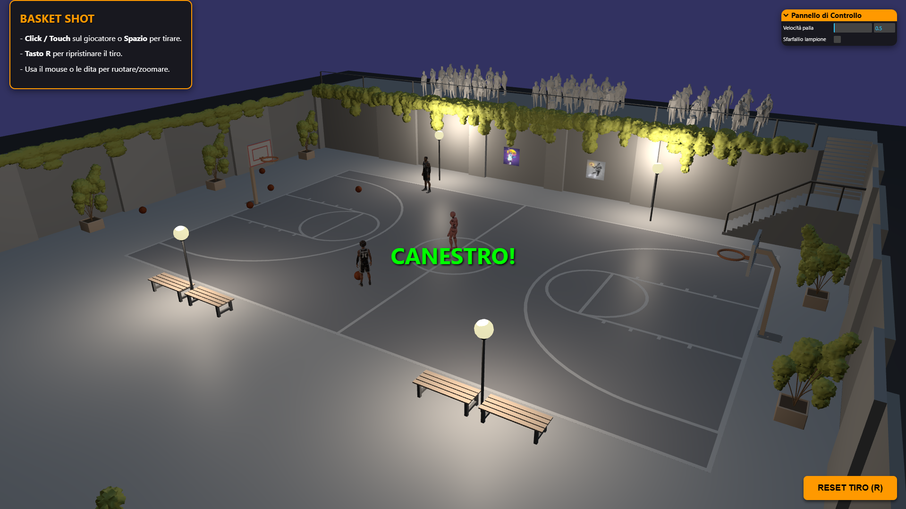
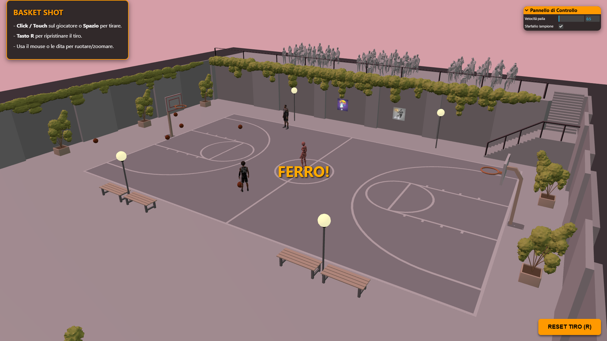
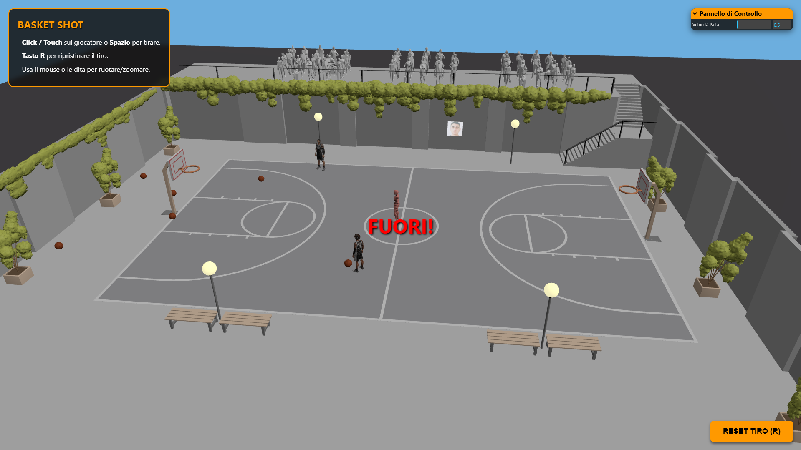
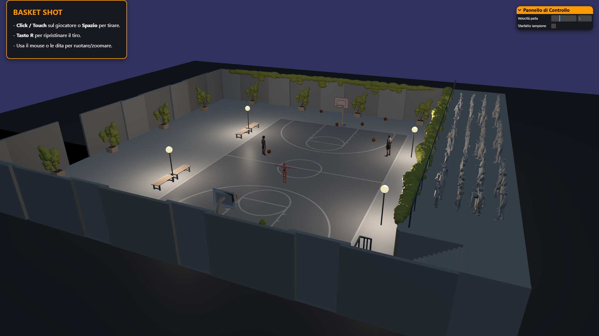

Basket Shot: Scena 3D interattiva sviluppata in Three.js
L'applicazione interattiva "Basket Shot", sviluppata tramite la libreria Three.js, consiste in una simulazione tridimensionale di un tiro a canestro in un campetto urbano.

Per conferire dinamismo all'ambiente virtuale, sono state implementate diverse tecniche visive e interattive. Lo scorrere del tempo è rappresentato da un ciclo giorno-notte compresso in pochi minuti reali, gestito fondendo i colori del cielo tramite interpolazione e attivando l'illuminazione urbana nelle fasce notturne. L'interazione principale si avvale dell'animazione scheletrica del giocatore e della simulazione matematica del tiro a canestro, accompagnati da effetti sonori reattivi. Tramite la GUI è possibile regolare la velocità della palla, mentre i controlli della telecamera garantiscono la piena navigabilità multipiattaforma.
I modelli tridimensionali utilizzati nel progetto sono stati originariamente scaricati online, per poi essere sottoposti a un ampio processo di modifica, rifinitura e ottimizzazione tramite il software Blender. Questo passaggio è stato fondamentale per arricchire la scena di elementi più realistici ed in tema con l'esperienza di gioco. Il lavoro è stato suddiviso in tre elementi distinti:
La scena si compone di vari asset 3D caricati in modo asincrono sfruttando diversi Loader offerti da Three.js. Anziché utilizzare ambienti esterni come Node.js, la libreria è stata integrata nel progetto importando in modo diretto i moduli nativi (ES Modules) appoggiandosi alla CDN globale unpkg.com.
GLTFLoader. Il giocatore include un'animazione scheletrica del tiro gestita tramite AnimationMixer.OBJLoader e MTLLoader per leggere correttamente i materiali e le texture mappate.PlaneGeometry a cui viene applicata una texture fotografica 2D caricata tramite
TextureLoader. Per far sì che i tabelloni reagissero correttamente alle ombre e alle luci del ciclo giorno/notte,
è stato applicato un MeshStandardMaterial..mp3 caricati tramite AudioLoader e collegati a un AudioListener posizionato sulla telecamera,
garantendo un feedback uditivo differente in base all'esito del tiro (canestro, ferro o fuori). I file audio sono stati pensati per aggiungere un tocco di ilarità al progetto.
L'intero flusso logico dell'applicazione è controllato da una macchina a stati finiti (STATE_IDLE, STATE_ANIMATING, STATE_FLYING, STATE_BOUNCING, STATE_FINISHED).
Questa architettura garantisce che il volo della palla inizi esattamente in sincrono con l'animazione da parte del modello 3D, gestita tramite setTimeout.
Il movimento della palla nello spazio non utilizza un motore fisico reale, ma sfrutta l'interpolazione vettoriale unita a funzioni trigonometriche per simulare in modo
efficace una traiettoria parabolica. La palla trasla dal punto di partenza (posizione della mano del giocatore al lancio) al punto di destinazione, che varia tra
posizione del canestro in caso di tiro positivo,
posizione del canestro con rimbalzo successivo in caso di tiro neutro
e 3 possibili punti della scena in caso di fallimento.
Il calcolo dello spostamento tra punto di partenza e di arrivo è dato da lerpVectors(), che posta la palla lungo una linea retta diagonale verso il bersaglio.
// Calcolo parabola principale ballMesh.position.lerpVectors(startPos, targetPos, flightProgress); const arcHeight = 4.0; ballMesh.position.y += Math.sin(flightProgress * Math.PI) * arcHeight; ballMesh.rotation.x += 10 * delta; ballMesh.rotation.z += 5 * delta;
L'aggiunta dell'onda Math.sin() calcolata sul progresso del volo garantisce l'innalzamento e la successiva caduta della palla simulando la parabola di tiro.
A questo si aggiunge la simulazione della rotazione della palla su sé stessa durante il volo lungo gli assi X e Z.
È stato implementato anche un rimbalzo aggiuntivo nel caso in cui la palla colpisca il ferro (STATE_BOUNCING) prima di cadere a terra, per differenziare lo scenario positivo da quello neutro.
Dopo la traiettoria di volo, avendo completato la sua funzione all'iterno della scena, la palla ritorna invisibile ballMesh.visible = false,
evitando il calcolo della successiva traiettoria di rotolamento che avrebbe solo appesantito la fluidità di gioco.



Il progetto è completamente ottimizzato e responsivo, supportando molteplici schemi di interazione:
Raycaster.
Affinché il click avesse effetto nel mondo 3D, le coordinate bidimensionali in pixel del browser sono state tradotte in Coordinate Dispositivo Normalizzate
in scala da -1 a +1, per poi essere proiettate come vettori nella scena.flightProgress.
Inoltre vi è la possibilità di attivare lo sfarfallio di uno dei lampioni del campetto.
L'esplorazione dell'ambiente avviene tramite OrbitControls, configurato con limitazioni precise (maxPolarAngle = Math.PI / 2)
per impedire rotazioni paradossali sotto il pavimento e gestire limiti di zoom (minDistance, maxDistance). È stato inoltre disabilitato
esplicitamente il comportamento di default dei tocchi sulla finestra (touch-action: none) per evitare interferenze su dispositivi mobile.
Uno degli elementi tecnicamente più complessi del progetto è la transizione fluida e continua dell'illuminazione per simulare il passaggio del tempo. Lo scorrere di un intero giorno viene simulato in 120 secondi reali.
La scena è illuminata da:
HemisphereLight che simula la rifrazione del colore del cielo sugli oggetti, ammorbidendo le ombre.
La funzione updateDayNightCycle() viene richiamata ad ogni frame nel render loop. A seconda dell'ora corrente, i colori del background (il cielo) e della luce direzionale
vengono fusi tramite interpolazione cromatica (lerpColors) per ricreare le tonalità dell'alba, del pieno giorno, del tramonto e della notte.
Per ottenere i mix dei colori che simulino i diversi momenti della giornata, sono stati definiti 6 colori base (3 per background e 3 per la luce del sole).

if (time >= 5 && time < 8) { // Alba (5 - 8)
mix = (time - 5) / 3;
bgColor.lerpColors(colorNight, colorDawn, mix);
sColor.lerpColors(sunColorNight, sunColorDawn, mix);
sunLight.intensity = 0.2 + mix * 0.8;
hemiLight.intensity = 0.1 + mix * 0.5;
}
Al fine di ravvivare una scena che rischierebbe di risultare troppo statica per un gioco sportivo, l'intensità delle PointLight dei lampioni segue un'interpolazione
lineare. Ciò permette all'illuminazione di accendersi gradualmente durante il crepuscolo e un spegnersi dolcemente alle prime luci dell'alba.